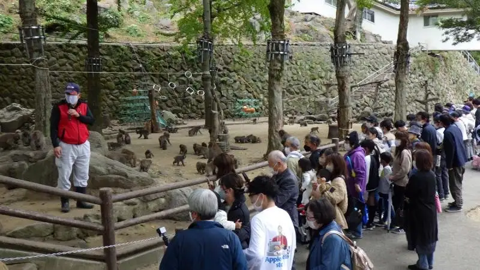
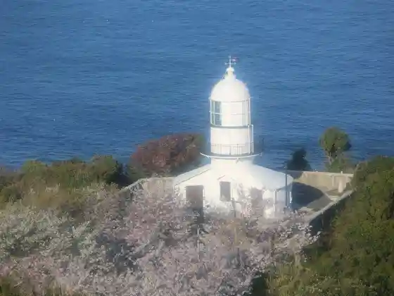
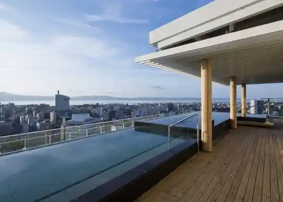
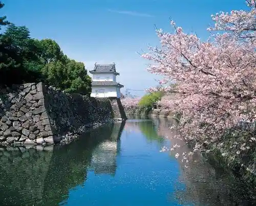
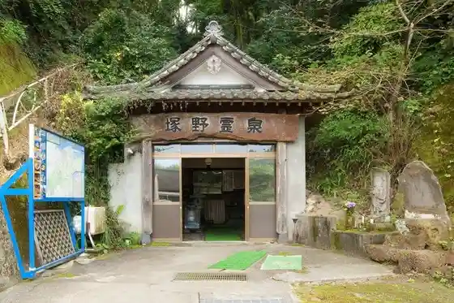

Oita
Oita · Oita
Oita
Highlighted on the Oita map.

Sights
Kan Saki (Sekisaki) Lighthouse

Shiteisupa Tenku

Oita Castle Park Funai Castle Ruins

Takasaki Yama Shizen Zoo
Tsukano Kosen Kyodo Bath

Tanjo Onsen
Higurashi Chaya
Oita Supotsu Park (Kurasasudomu Oita)
Oita Mariinparesu Aquarium (Umitamago)
Oita Prefectural Art Museum (OPAM)
Kanzaki (Kozaki) Beach
Oita Kantorii Club Tsukigata Kosu
Oita Tokyu Gorufu Club
So Kyu Hime Shrine (Hayasuhimejinja)
Hoyo Yosai Hodai Ato
Sachi Seika
Amabe no Sato Kan Aji Kansa Ba Kan
Namban BVNGO Koryu Kan
Gokoku Shrine
Nishi Kan Ta (Sasamuta) Shrine
Ono Kawa Kasenjiki Migigishi no Kosumosu Hatake
Kantan Minato Sono
Wakazuma no Mise
Sankinkotai Doro Ima City Ishidatami Michi
Sano Shokubutsu Park
Taishi Namaki (Ojuki) Beach
Tennen Onsen Ten no Kawa
Heiwa City Tami Park
Hahasohara (Yusuhara) Hachiman Shrine
Hotel Topazu Dai Zai Ekimae Ogyoku Baths
Nanase (Nanase) Kawa Nature Park
Sofikko Land
Shimogori Onsen
Hyakujusai Baths (Nyuguroria Hotel Nai)
Akeno Asahi Onsen
Kurisutaru Onsen
Maruta Ya Onsen Seiho Baths
Oita Kyasei Hotel Onsen
Tennen Onsen Gensen Kake Nagashi no Yado Tsurusaki Hotel
Oshi no Onsen Hanamaru Baths
Shinminato Onsen
Kanaike Onsen (Hotel Kudo Oita Nai)
Bungo Onsen Takada Baths
Mare Kan Sha Baths
Oita Onsen Monogatari Mikawa Baths
Nishiki Onsen
Tennen Onsen Nyu Ozai
Jinkichi Baths
Oji Onsen
Roadside Station Saganoseki
Ta no Ura Beach
Ferii Sanfurawa Nishi Oita Minato
Oita Art Museum
Ato Plaza
Toku O Tera (Tokuoji)
Oita Moto Town Sekibutsu
Yoshino Umezono
Oita Ritsu History Museum Bungo Kokubunji Ato
Oita Tourist Information
Totsugi (Hetsugi) Hon Town Machinami Hoashi (Hoashi) Honke Shuzo Kura
Takase Sekibutsu
Goto Ie House
Iwaya Teraishi Hotoke
Hieizan Tendai Soen Hisashi (Enju) Tera
Otomo Yakatato (Uehara Kan)
Daijin (Daijin) Tsuka Burial Mound
Fugu Ryo Gurupu
Mori Sora Kuwa (Morikuso) Memorial Museum
Tsukiyama (Tsukiyama) Burial Mound
Tsurugi (Ken) Hachiman Shrine
Ho Kokoro Tera Sora Kuwa Shisaku (Kusoshisaku) no Michi
Yuho Park no Chokoku Gun
Oita Yakusho